This article is about some general stuff that happens on the physical layer.
CSMA/CD =
- Carrier Sense - Who gets to talk? Wait for your turn
- Multiple Access - When you are done, you can immediately send another request. Like, to ask. a doctor check your nose after throat examination you don’t need another appointment, just ask right away.
- Collision Detection - NICs have a module that detect abnormal voltage (collision).
Domain - area in within which all devices hear or see everything (not necesarily respond).
Collision domain - area in which all devices hear or see collisions occuring. Hubs and are in the same collision domain while switches are not.
Broadcasr domain - area in which all devices hear or see broadcast traffic (hubs, switches break up broadcast domains; routers do) ❓
Four causes of trouble
- Collisions (see below).
- Signal reflection. Unterminated cable, imdence mismatch, too high band radius of the cable. Electrons are “bouncing back” when there is no resistor to absorb the voltage potential OR when there are several wires with different impedence.
Below is the depiction of a cable that does not contain a resistor at the end:
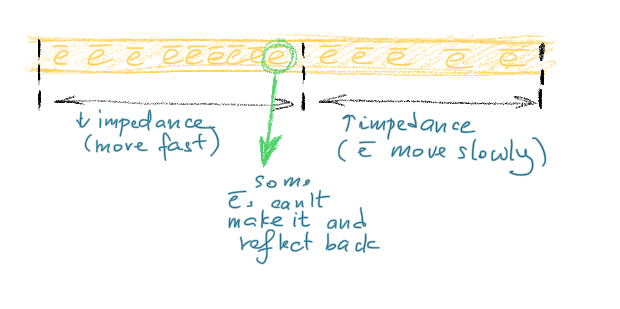
Below is the depiction of two cables with different impedence being connected:
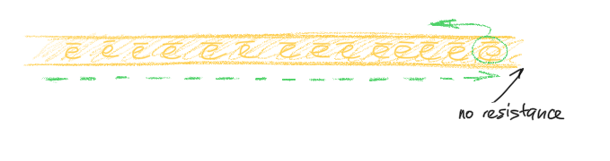
Expert Sniffer is the tool to detect runt and corrupted frames. Can of course also be examined with a hex editor.
- very short frames (typically less than 16-32 bytes),
- no preamble in the frame
- all frames cut short at approximately the same offset
-
Electrical noise. Also, no preamble in the frame. Frames are cut off at random length. ❓
-
Hard malfunctions. The hardest to diagnose <= lots of evidence and forms. Generally, garbage:
1’s and0’s random “jabbering”. Most trnseivers detect garbage and have parameters of max time jabber “tolerance” set.- Gigantic frames (> 1500 bytes).
Early Collisions
Let’s imagine that two NICs (netword card of different PCs) want to talk to each other. The wire is idle at the moment. Both Bob 👨🎨 and Alice 🤸♀️ want to send something on the wire and ask the wire approximately the same moment:
Hey, wire, are you busy?
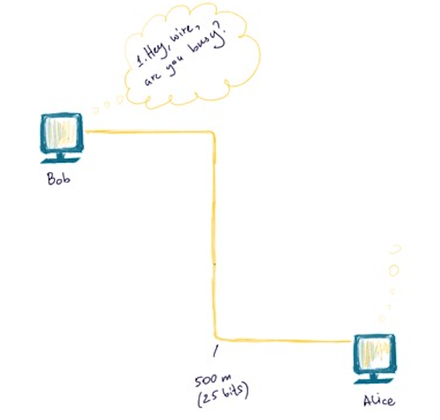
The wire is not busy and that’s why it replies I’m free as a bird to each one of them.
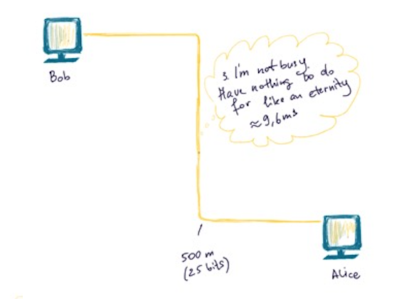
Why, by the way, the wire replies with such a precise time? 9.6 ms? The sole reason for the 9.6 microsecond interframe gap is to allow the station that last transmitted to cycle its circuitry from transmit mode to receive mode. Without the interframe gap, it is possible that a station would miss a frame that was destined for it because it had not yet cycled back into receive mode. From firewall.cx.
Since both think that the wire is free (and so it actually is at the moment), both send some stream of bits (green ball).
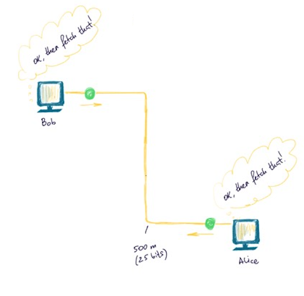
The balls are approaching each other…
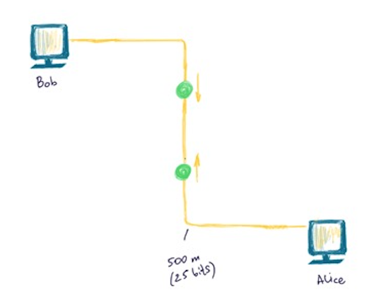
… and babam! 💥 When they meet, there appears an abnormal voltage (collision). This interrupted frame is called Runt.
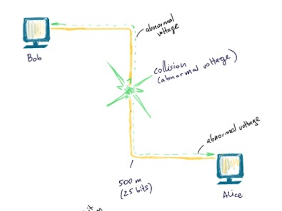
This abnormal voltage then propagates back to both Bob 👨🎨 and Alice 🤸♀️.
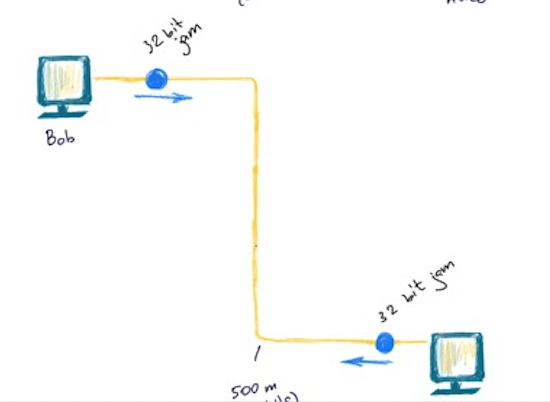
Their NICs both understand that there was a collision and therefore their data was not sent. Both of them send 32 bit jam and let. TBEBA (Truncated Binary Exponential Backoff Algo) takes it from there to determine the best time when to retry. All this takes at max 2-3 ms usually.
This is a normal flow. But sometimes when the wire is longer that it should be or a malfunctioning adapter, for example, or there was some other reason (can’t think for any), late collision can happen (this is very bad). A collision can be detected only if NIC’s in transmit mode.
Late Collisions
For 10BASE5 thick Ethernet the recommended wire length is 500 meters. For 10BASE2 think Ethernet - 185 meters. A problem can happen if the wire is longer than that.
Say, the collision took place very close to Alice 🤸♀️ and very far from Bob 👨🎨.
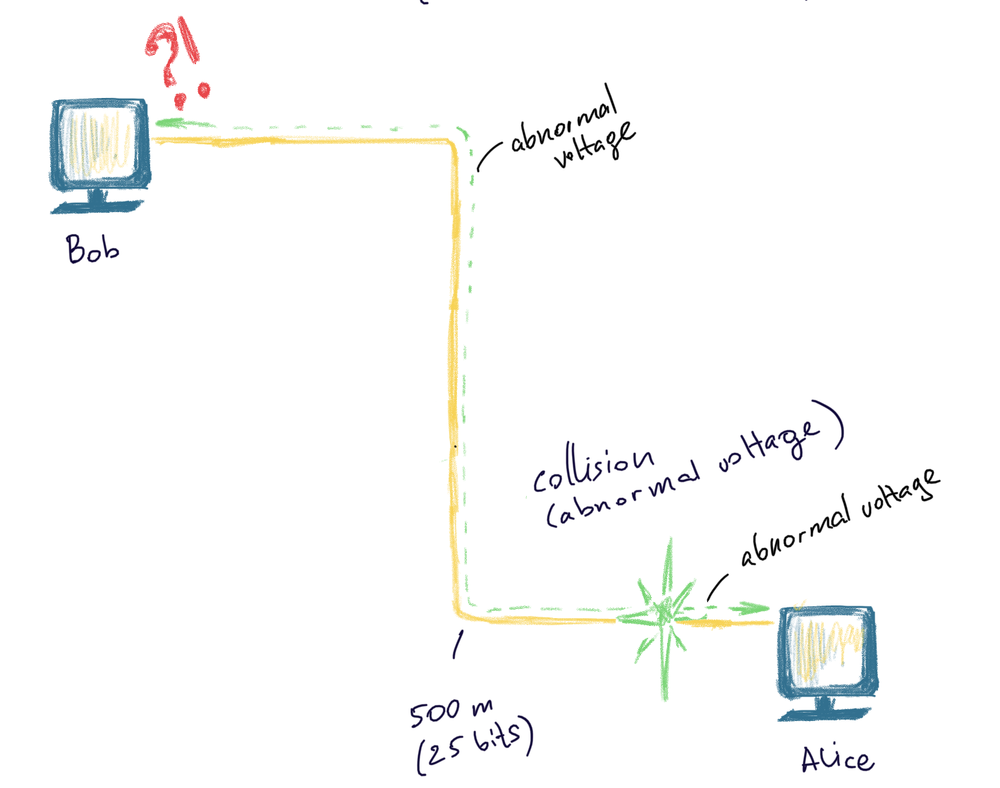
As usual, as soon as the collision takes place, an abnormal voltage propagetes in both directions: to Alice 🤸♀️ and Bob 👨🎨. Alice sends jam bits upon detecting this collision as it should have, but Bob 👨🎨 is no longer listening. When Bob’s NIC gets this signal, it doesn’t understand what is that and does not resend the frame. Such collisions are only fixed on the upper layers, which can take 10-100 times as much.
❗️ Full-duplex communication allows for the conversations in both directions simultaneously. Semi-duplex - only one direction at a time. The NIC switches between the two modes. The protocol used is now not seen on the network, since most of the connections are full-duplex.
Explanations
the speed of light 🌞 ~ 300 000 000 m/sec
the speed of electrons in copper ~ 2/3 ~ 200 000 000 m/sec
Ethernet operates on 10Mbps (10 000 000 bit/sec)
the speed of electrons / 10 Mbps = 20 m/bit => one bit occupies approximately 20 meters. One frame is at least 64 bytes (512 bits) in size. Therefore, the minimum size of the wire is 20 m/bit * 512 bit = 10240 m.
500 m/20 m/bit = is approximately 25 bits. We have a wire 500 m long. Suppose, a collision happended max close to Alice 🤸♀️, almoust 500 m far from Bob 👨🎨. At any given time (assuming, all of the wire is accupied with bits). So, it’s fair to say that the 500 meter wire is approximately 25 bits. So, as we have assumed, our collision happened max close to Alice 🤸♀️. The time the abnormal voltage propagates back to Bob 👨🎨, it will have sent another 25 bits already, which is 50 bits in total. So, Bob 👨🎨 would have sent 50 bits in total before he detects the collision. The collision is considered late, if 512 bits have already been sent by one or both of the parties.
Let’s do the reverse math: How long does the wire has to be to cause the late collision?
Since max amount of bits transfered before the collision is considered “late” is 512 bits:
500 m/20m/bits = 25 bits. X m / 20m/bits = 512 bits = > x = 512 * 20 m/b = 5000 m.
That hell too much. Why? Simple precautions?
The first reason is that it is possible to extend that length with up to 4 repeaters before the IEEE 802.3 spec is violated. This means that the signal may have to travel through as much as 2500 metres of cable to reach Station B, or 5000 metres of cable round trip.
The second reason is, yes, precautions. The specifications are twice as strict as needed, allowing ample room for errors 🤪.
Troubleshooting cheatsheet
For a COAXIAL Ethernet. This is taken from here.
Is a preamble (less than 8 bytes of AA or 55) visible at the very end of the frame?
Yes.
Make sure you haven’t exceeded the specifications of your cable (maximum cable length, maximum repeaters in between nodes, etc)
Use a “divide and conquer” method to isolate the troublemakers. Separate the network into halves using a bridge and see which side of the bridge the problems occur on. Now separate that half into halves, etc….
No - go on.
Are the corrupt frames very short, and consistently the same length?
Yes.
Signal reflection. First check for un-terminated cables. If the cable is terminated properly, your job becomes a lot harder. If new cable has been installed recently, impedance mismatch is probably the problem. Avoid this problem by buying all your cabling from the same lot (if possible) and buying cabling all at once and putting extra in storage rather than ordering as needed. Finally, check for cable deformation due to bending the cable or placing heavy objects on the cable.
A Time Domain Reflectometer can really save you some work when diagnosing this type of problem. This device can tell you, probably to the foot, how far down the wire the signal reflection is occurring.
No - go on.
Are the frames random in length, all cut off cleanly with no signs of bit streaming or other hardware malfunction?
Yes.
Your problem is probably electrical noise. Use the “divide and conquer” method outlined in bullet number 1 to determine where the noise is occurring and then use your intuition. I’ve seen problems as bizarre as a dentist’s X-ray machine being on the other side of the wall to the wiring closet and every time the dentist took an X-ray the network would go down!
No - go on.
If you’ve arrived at this point, your problem is probably hardware related. Use the “divide and conquer” method outlined in bullet 1.
Signal Encoding
It’s the format of voltage transmission. Defines how to encode bits as electrical signals. Some of them are differencial, some are not. Differential - when the bit’s representation depends on the previous bit. Differential encoding schemes are good in the presence of the noise. Detecting a voltage transition is easier than assuring voltage maintains at a certain level. Bipolar AMI and Pseudoternary - alterations in 1s provide extra sunc info for the receiver => long sequence can be distorted and clocks may drift, but 1s each tells the receiver when the transition occur and help resync. But the problem’s when lot’s of 0s follow.
For example, lets send this value using different encoding schemes: 0 0 1 1 0 1 0 1.
RZ
RZ stands for “return to zero”. No signal - 0, signal - 1.
With RZ a ‘0’ bit is represented by 0 volts whereas a ‘1’ data bit is represented by +V volts for half the cycle and 0 volts for the second half of the cycle. This means that the average DC voltage is reduced to 1/4V plus there is the added benefit of there always being a voltage change even if there are a series of ‘1’s. Unfortunately, the efficiency of bandwidth usage decreases if there are a series of ‘1’s since now a ‘1’ uses a whole cycle.
NPZ-L
NPZ-L means “non return to zero level”. When a 1 is transmitted, higher voltage is detected and when a lower voltage is detected (zero volts) - means 0 is being transimitted. With this signal encoding scheme it is difficult to distinguish a series of 1s or 0s due to clock synchronisation issues. Since 0 is 0 voltage and 1 is uses a higher voltage the average voltage is 1/2 volts => high power output.
In addition, the bandwidth is large i.e. from 0Hz to half the data rate because for every full signal wave, two bits of data can be transmitted (remember that with MPE the data rate equals the bit rate which is even more inefficient!) i.e. two bits of information are transmitted for every cycle (or hertz). ❓ After 50m of cable attenuation the signal amplitude may have been reduced to 100mV giving an induced noise tolerance of 100mV.
Below is how a 00110101 binary value (or 0x35 in hex or 53 in decimal or digit 5 in ASCII) would be represented when transmitted over the wire using this encoding scheme:
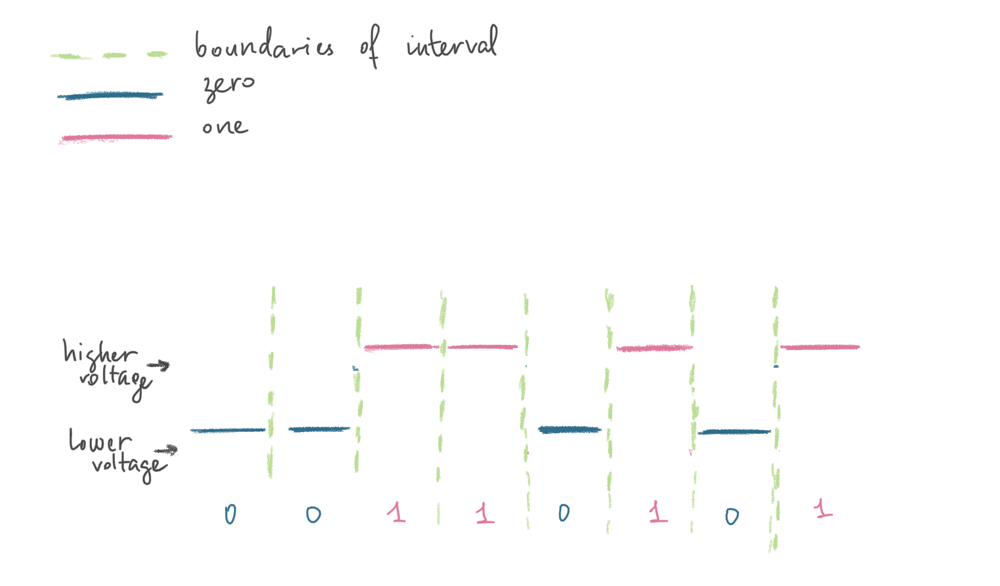
NRZ-I
NRZ-I stands for “non return to zero invert”. Each 1 is represented as a change in voltage level (from 0 to +V or from +V to 0 volts, depending on the previous level), while 0s are representing with no voltage change. Therefore, 1s invert the voltage while 0s do not.
Below is how a 00110101 binary value (or 0x35 in hex or 53 in decimal or digit 5 in ASCII) would be represented when transmitted over the wire using this encoding scheme:
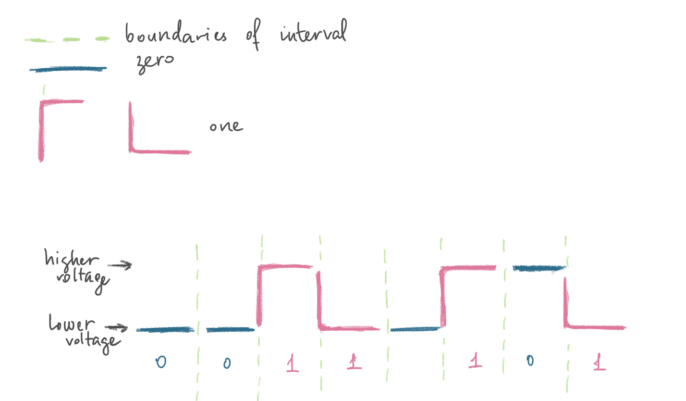
Bipolar-AMI
Zero is already encoded with no-line signal (moddle level 0 voltage). 1 - either + or -.
Below is how a 00110101 binary value (or 0x35 in hex or 53 in decimal or digit 5 in ASCII) would be represented when transmitted over the wire using this encoding scheme:
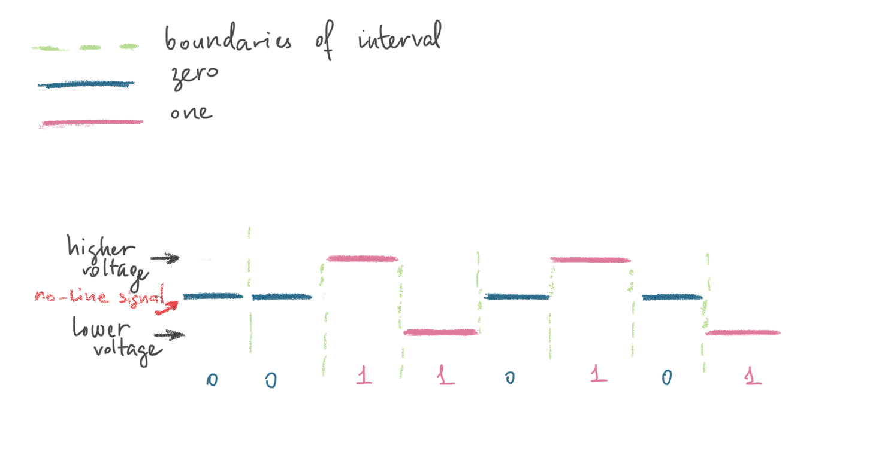
Psedoternary
Below is how a 00110101 binary value (or 0x35 in hex or 53 in decimal or digit 5 in ASCII) would be represented when transmitted over the wire using this encoding scheme:
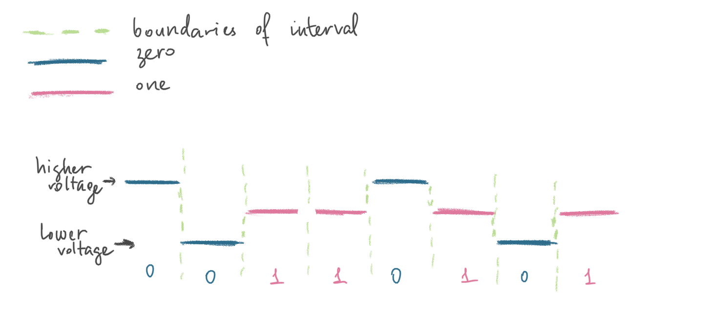
Manchester
Additional trnasition in the middle, which is cost but provides sync. Manchester encoding is used in all 10 Megabit per second Ethernets; for example, 10BASE2 Thin Ethernet, 10BASE5 Thick Ethernet and 10BASE-T Twisted-Pair Ethernet. 1s are represented with a voltage change from low to high, while 0s are represented with a voltage change from high 0.85v to low -0.85v.
The master clock speed for Manchester encoding always matches the data speed and this determines the carrier signal frequency, so for 10Mbps Ethernet the carrier is 10MHz.
Below is how a 00110101 binary value (or 0x35 in hex or 53 in decimal or digit 5 in ASCII) would be represented when transmitted over the wire using this encoding scheme:
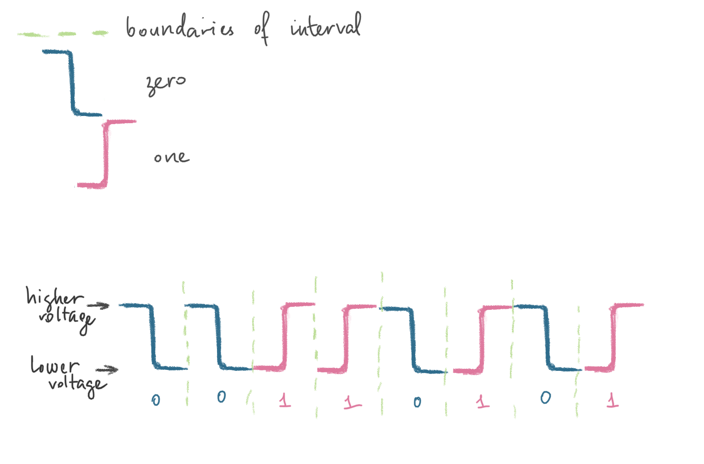
Differenctial Manchester
There’s always a transition in the 1/2 of the interval. 0 - transition at the beginning if each interval, 1 - no transition at the beginning of each interval.
If we divide all the chain of 0s and 1s into equal intervals and put each separate bit within the boundaries of each interval (see the green dashed vertical line on the picture), we would distinguish 0s from 1s when we detected transition at the very start of the interval. Whenever there is no transition at the very start of the interval and only in the middle - it’s a 1.
A ‘1’ bit is indicated by making the first half of the signal, equal to the last half of the previous bit’s signal i.e. no transition at the start of the bit-time. A ‘0’ bit is indicated by making the first half of the signal opposite to the last half of the previous bit’s signal i.e. a zero bit is indicated by a transition at the beginning of the bit-time. In the middle of the bit-time there is always a transition, whether from high to low, or low to high. Each bit transmitted means a voltage change always occurs in the middle of the bit-time to ensure clock synchronisation. Token Ring uses DME and this is why a preamble is not required in Token Ring, compared to Ethernet which uses Manchester encoding.
Below is how a 00110101 binary value (or 0x35 in hex or 53 in decimal or digit 5 in ASCII) would be represented when transmitted over the wire using this encoding scheme:
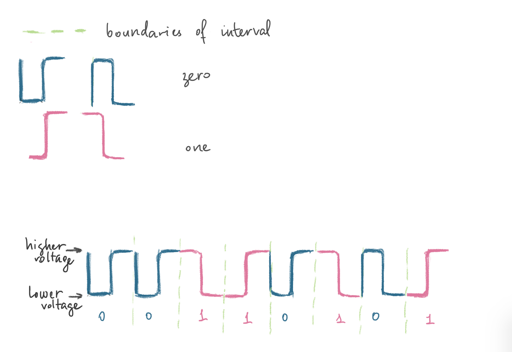
❓ What’s clock synchronisation?
More about this and other encoding schemes here.
Devices
Coaxial Cable
Normally uses F-type connector.
Twisted Pair Cable
RJ-45 connector. Most common for LAN. Voice (blue), Auxiliary (brown, rightmost), Ethernet Receive (yellow), Ethernet Transit (green, leftmost). Max 100 meters. Cat rating system. Cat5 - 100Mb/sec for up to 100 m. Cat6/Cat6a - 1/10 Gb/sec for up to 100m.
Hubs and Repeaters
Since the max length of a cable (10BASE5 thick Ethernet) that connects two machines cannot exceed 500 m (according to the specs), there is a need to amplify and control the signal. Since machines over the wire are much farther then 500 meters, hubs and repreaters serve this particular purpose.
They both run in promiscuous mode, i.e. they don’t care who’s the sender, who’s the receiver. They simply forward the signal. They don’t even read the data they are transmitting. UTP (unshielded twisted pair cable).
Number of ports = number of PCs connected. Hubs can have an uplink port to connect to another hub. For example, the hub below has 6 ports. Therefore, it can connect 6 PCs max. Whatever PC1 sends to PC6, other PCs hear as well. It’s the job of other OSI layers to discard this frame or not. Such packets are usually discarded on the data link layer by PC’s NIC. But if you put your NIC in a promiscuous mode, it will not discard them. Hubs and repeaters are a holyday for a sniffer. Using Wireshark or other packet capture software and being on the same network, one can intercept all traffic.

COAX cable
A Cable is pretty much the same as a hub, it also makes to difference between the frames. Its only concern is to forward. Green squares are resistors (50 Ohm) that absorb the signal so that it won’t reflect back (a signal reflection problem discribed here).
One segment of such cable is max 185 meters (10BASE2 thin Ethernet) and at most 30 nodes.

Refernces
[1] firewall.cx
[2] https://www.youtube.com/watch?v=du_boiwX1yU
[3] About signal encoding - http://www.mathcs.emory.edu/~cheung/Courses/455/Syllabus/2-physical/1-Others/Encoding.htm